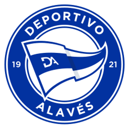
DALa final más recordada
Deportivo Alavés
1921
Año de fundación del club
Babazorros / El Glorioso
Una breve historia
Fundado en 1921, el Deportivo Alavés vivió el momento más icónico de su historia en la final de la UEFA Cup 2001 ante el Liverpool, un partido de 5-4 considerado una de las mejores finales europeas de la historia, pese a la derrota.
Fieles a los colores
de Vitoria-Gasteiz
Foto pendiente
(deportivo-alaves-1.jpg)';" />
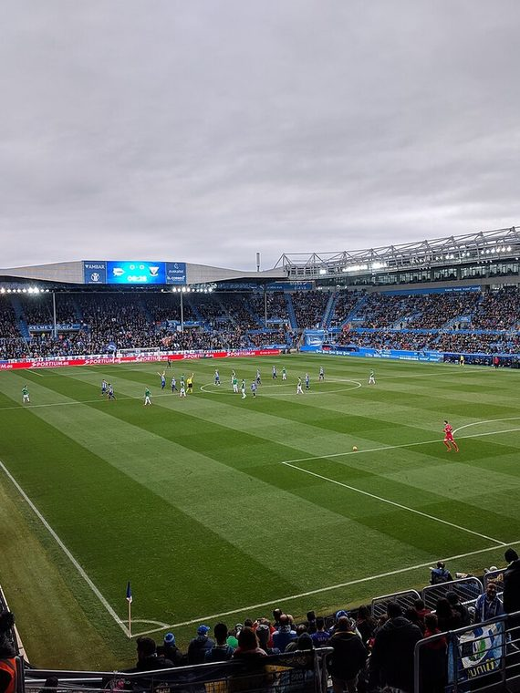
📷Foto pendiente
(deportivo-alaves-2.jpg)';" />
Títulos y logros
Momentos que hicieron historia
★
Finalista de la UEFA Cup en 2000/01 (uno de los partidos más recordados de la historia)
★
Ascenso histórico a Primera en la temporada 1997/98
★
Club referencia del País Vasco fuera de Bilbao y San Sebastián
La rivalidad
El duelo que enciende a la afición
Temporada 2026 / 27
Plantilla del primer equipo
Datos de ejemplo — reemplázalos con la plantilla real en data/teams.js.
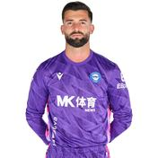
🧑';" /> Sivera Portero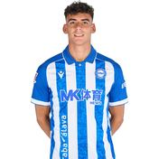
🧑';" /> Ángel P. Defensa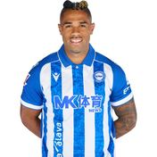
🧑';" /> Mariano Delantero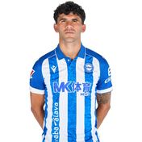
🧑';" /> C. Aleñá Centrocampista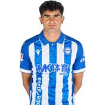
🧑';" /> Novoa Defensa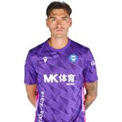
🧑';" /> A. Rodriguez Portero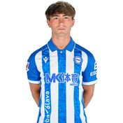
🧑';" /> Mikel R. Defensa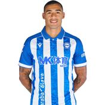
🧑';" /> C. Protesoni Centrocampista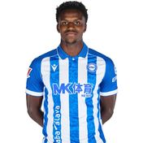
🧑';" /> Selu Diallo Centrocampista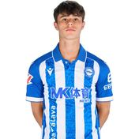
🧑';" /> Izei Centrocampista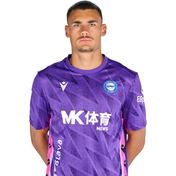
🧑';" /> Swiderski Portero